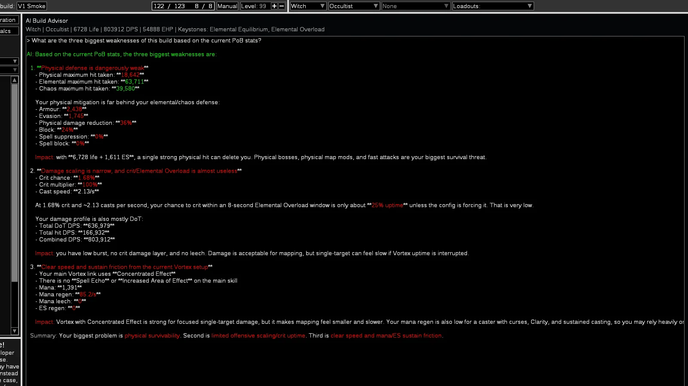
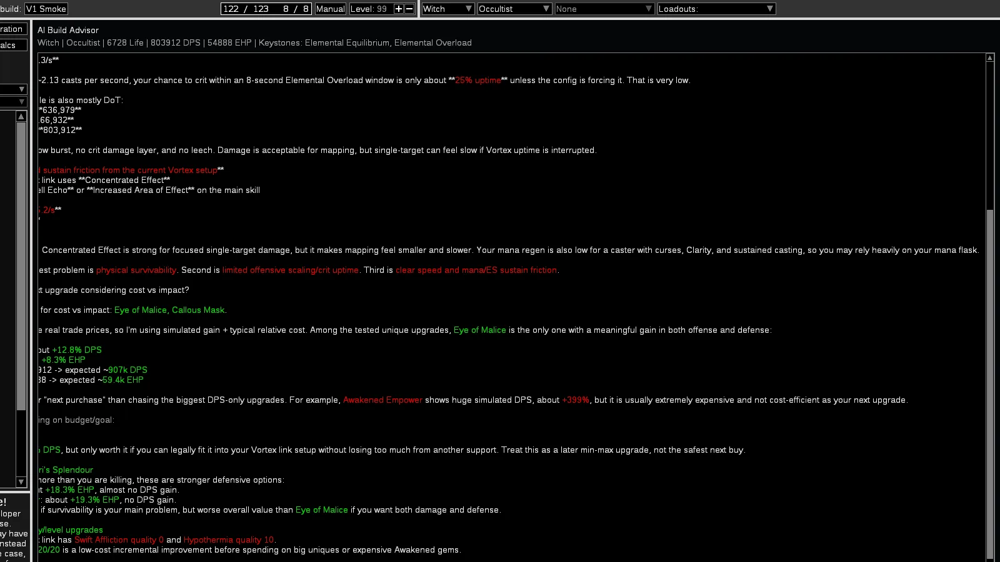
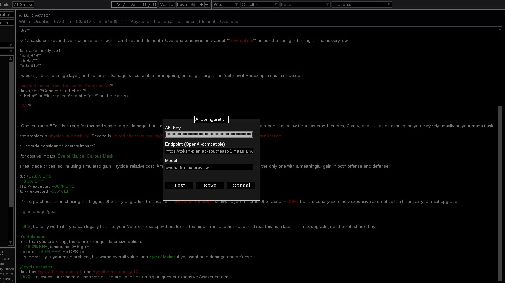

Chat dentro do PoB
Pergunte em linguagem natural sem exportar, copiar números ou alternar entre ferramentas.
Converse com o build que já está aberto, receba mudanças acionáveis e veja o impacto recalculado pelo próprio Path of Building antes de aplicar qualquer coisa.
Demonstração da experiência; números ilustrativos.
O modelo interpreta sua intenção e propõe ações. O Path of Building continua sendo a fonte da verdade para DPS, EHP, resistências, max hits, pontos e todos os cálculos que importam.
Você vê o diff e confirma antes do build real ser alterado.
Capturas reais do fork rodando com o bridge de IA integrado ao Path of Building.

Pergunta, resposta contextual e proposta de ações sem sair do PoB.

Upgrades testados no motor do PoB, com impacto real em DPS e EHP.

Endpoint, modelo e chave mascarada sob controle do usuário.
Um fluxo curto por fora, várias barreiras de segurança por dentro.
“Como melhorar?”, “por que meu DPS está baixo?” ou uma mudança específica.
Envia o núcleo do build e adiciona gems, uniques, árvore ou config somente quando úteis.
A resposta pode carregar um lote estruturado entre as 18 ações conhecidas pelo aplicativo.
Valida o lote em um clone, faz rebuild completo e mede o antes/depois real.
O diff aparece primeiro. Só um Apply explícito altera o build aberto.
Feita para melhorar um build existente sem transformar conselho de LLM em verdade automática.
Pergunte em linguagem natural sem exportar, copiar números ou alternar entre ferramentas.
DPS, EHP, max hits e defesas vêm do mainOutput do PoB, não da imaginação do modelo.
Itens, skills, árvore e config entram quando relevantes. Catálogos pesados são carregados sob demanda.
Personagem, ascendências, skills, itens, jewels, passivas, masteries, tattoos e configuração.
Gems de suporte e uniques candidatos são testados no motor de cálculo sem contaminar o build ativo.
Schema, domínio, clone isolado, recálculo, fingerprint e confirmação. Nessa ordem.
O modelo não executa Lua arbitrário. Ele só pode solicitar ações conhecidas, cada uma com validação própria.
Ver modelo completo de segurança →Nível, classe, ascendência principal e secundária, bandits e pantheon.
Adicionar, remover, escolher skill principal e selecionar a parte calculada.
Equipar item ou jewel usando texto completo validado pelo próprio PoB.
Alocar, desalocar, escolher mastery, aplicar tattoos e ajustar condições.
O pacote é portátil. Não há instalador e a configuração fica sob seu controle.
Windows nativo · Wine/Proton no Linux
Endpoint HTTPS · modelo disponível · timeout ativo
Qual é o gargalo desta build agora?
Você escolhe o provedor OpenAI-compatible. A chave fica em configuração local e é usada apenas no header de autorização da chamada HTTPS.
Ler documentação de segurançaCampo mascarado; arquivo excluído do Git e das releases.
A chave vai somente ao endpoint configurado por você.
Nenhuma telemetria, analytics ou serviço intermediário na V1.
Pacote publicado sem configs, logs, builds salvos ou credenciais.
O provedor recebe sua pergunta, histórico limitado e o contexto do build necessário para respondê-la. Use um provedor em cuja política de retenção você confie.
O essencial sobre provider, segurança e controle das alterações.
Não. A IA interpreta a pergunta e propõe mudanças. DPS, EHP, max hits, resistências e diffs continuam sendo calculados pelo motor do PoB.
Qualquer endpoint HTTPS compatível com a API de chat da OpenAI, desde que você informe uma API key válida e o identificador correto do modelo.
Não. O lote é validado e simulado em um clone, o diff é exibido e o build real só muda depois de um Apply explícito.
Não. O arquivo local é ignorado pelo Git e excluído dos pacotes. A chave é enviada apenas ao endpoint escolhido, dentro do header de autorização HTTPS.
Sim. O mesmo pacote Windows pode ser executado por Wine ou Proton. Não há binário Linux nativo nesta versão.
PathOfAIBuilding v1.0.0 está disponível como pacote portátil para Windows, Wine e Proton.